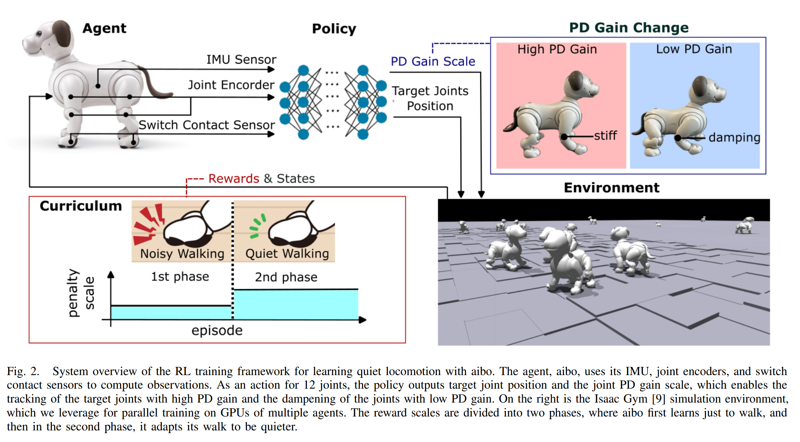
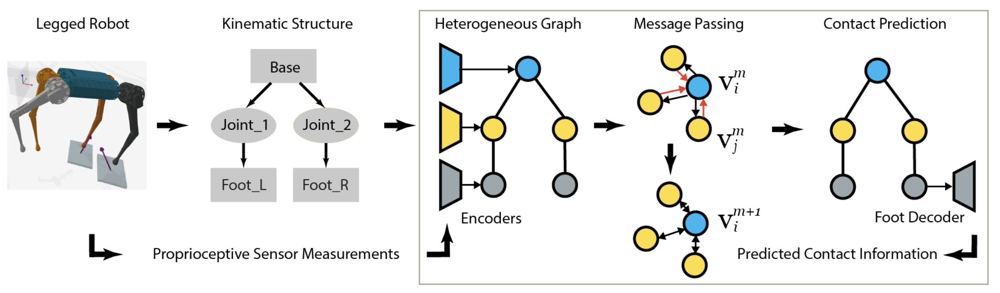

3️⃣ 3mins papers
RLOC: Terrain-Aware Legged Locomotion using Reinforcement Learning and Optimal Control
2020년 논문이지만, 계속해서 Privileged Information 컨셉을 유지하면서, 관련 논문을 찾고 있습니다. - 이 논문은 강화학습(RL)과 모델 기반 제어를 통합하여 사족보행 로봇이 다양한 지형에서 동적 보행을 수행할 수 있도록 하는 프레임워크를 제안합니다. 이 접근법은 온보드 고유수용성(proprioceptive) 및 외부수용성(exteroceptive) 피드백을 활용하여 센서 정보와 원하는 속도 명령을 발걸음 계획으로 매핑하는 RL 정책을 학습합니다. 학습된 정책은 모델 기반 모션 컨트롤러와 결합되어 복잡한 지형에서도 안정적인 보행을 구현합니다. 또한, 신체 전체의 움직임 추적 및 회복 제어를 위한 보조 RL 정책을 도입하여 물리적 파라미터의 변화와 외부 교란에 대응합니다. 이 프레임워크는 ANYmal B 및 ANYmal C 로봇 플랫폼에서 재학습 없이도 성공적으로 적용되었습니다.
이 논문은 “Provable Partially Observable Reinforcement Learning with Privileged Information” 연구와 연결 지어 해석할 수 있습니다. 특히, 시뮬레이션에서 특권 정보(privileged information)를 활용하여 RL 정책을 학습하고, 실제 환경에서는 제한된 센서 정보만으로도 안정적인 보행을 구현하는 접근법은 두 연구의 공통된 특징입니다. 이는 특권 정보의 활용이 결정론적 필터 조건(deterministic filter condition)을 만족하지 않더라도, 적절한 제약 조건을 통해 안전한 강화학습 기반 보행 컨트롤러를 설계할 수 있음을 시사합니다.
이러한 통찰을 바탕으로, 특권 정보를 활용한 교사-학생 학습(teaching-student learning)과 비대칭 액터-크리틱(asymmetric actor-critic) 방법을 통해 사족보행 로봇의 복잡한 지형에서의 안전한 보행을 구현할 수 있습니다. 또한, 적절한 제약 조건을 도입하여 강화학습 기반 보행 컨트롤러의 안정성과 안전성을 향상시킬 수 있을 것으로 기대됩니다.
Small Home Robot
Learning Quiet Walking for a Small Home Robot
- 지금까지의 연구는 강화학습이 얼마나 제어기를 강건하게 만들었느냐, 혹은 얼마나 fancy한 움직임을 만들었느냐에 초점을 두어왔었음. 하지만, 본 논문은 실제 가정에 로봇이 투입이 되었을 때 불편함을 느낄 가능성이 높은 “소음”에 초점을 맞추어 연구를 진행했다. 이처럼, 기술적인 어려움보다도 실제 삶에 있어서 도움이 될만한 기술을 연구하는 것 또한 좋은 방향으로 보인다.
- 기술적인 어려움은 크게 없으며 curriculum learning을 통해 1st phase에서는 소음을 신경쓰지 않는 모션을 학습하고, 2nd phase에서 조용한 모션을 학습하도록 만든다. 네트워크의 output은 “PD Gain의 Scale”과 “ Target Joints Position”을 내보내 stiff한 모션을 만들지 damping 있는 모션을 만들지 조정한다.
- 본 실험(slope 극복실험)에 따르면 제어기의 강건도와 조용함이 반비례 관계임을 확인할 수 있었다. 미래에는 perceptive sensor를 통해 좀 더 고도화된 보행전략을 취하도록 만들 수 있을 것이다. 또한, 발자국 사운드와 관련이있는 발 접촉 속도를 최소화하는 간접 reward를 줌으로써 문제를 해결했는데 이는 토크를 줄이므로써 배터리 효율성을 증가시키는 방식 등으로 활용이 가능할 것이다.
- Paper Link
- Youtube

MI-HGNN
Morphology-Informed Heterogeneous Graph Neural Network for Legged Robot Contact Perception
- MI-HGNN은 로봇의 관절과 링크를 각각 노드와 엣지로 모델링하여, 기존 모델 대비 8.4% 성능 향상과 탁월한 파라미터 효율성, 일반화 및 샘플 효율성을 달성함
- 로봇의 형태학(morphology) 정보를 반영한 이종 그래프 신경망(Heterogeneous Graph Neural Network) 아키텍처에 모델 기반 제약을 통합하여, 실제와 시뮬레이션 데이터에서 접촉 인식 문제를 효과적으로 해결
- 이전에 미니 프로젝트로 했었던 GNN 아이디어는 단순히 보행하는 rl policy에 간접적인 정보를 넣어주는 걸로 진행했었는데 이 논문에서 GNN은 보다 직접적으로 ground reaction forces (GRFs)를 예측하는 학습을 시켰다는 점이 새로웠으며 제어하는데 GRF 정보가 필요할 때 한 모듈로 이용해보면 좋겠다는 생각이 들었음
- Paper Link
